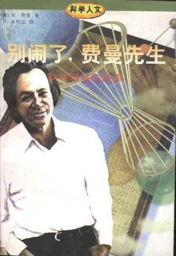

《别闹了，费曼先生》

总体观点
诺贝尔物理学奖得主理查德·费曼的自传《别闹了，费曼先生》，是科学史上最离经叛道、充满生机与顽童恶作剧色彩的传奇自述。
核心精神：保持永不疲倦的纯粹好奇心，拒绝被任何权威、教条与学术装腔所规训。科学探索的本质不是背诵高深的名词概念，而是像孩子拆玩具一样动手探寻自然万物运转的底层机理。
全书记录了他从童年修收音机、在普林斯顿恶搞大师、参与曼哈顿工程造原子弹并撬军方保险箱，到战后在加州理工打桑巴鼓、学画画与批判“草包族科学”的璀璨人生，诠释了智力诚实与生命热情的极致可能。
核心观点 共 6 条
-
1. 理解事物不能靠死记名词，必须搞懂它背后的运作机理
记住一种鸟在五种语言里的名字丝毫不代表你了解这只鸟；科学的本质是观察现象与追问原因。
例 ·父亲从小带小费曼在树林散步，不教鸟叫什么名字，而是引导他观察鸟啄羽毛不是为了好看而是为了吃掉羽毛根部的小寄生虫。 -
2. 永远保持把世界当成巨大玩具去探索的赤子之心
最伟大的科学发现往往源于看似毫无功利目的的纯粹好玩；学术研究一旦失去乐趣就会沦为枯燥苦役。
例 ·费曼在大学食堂看到有人在空中抛盘子，盘子旋转和晃动的频率不一致，他纯粹出于好玩推导它的力学方程，最终引向了诺贝尔物理学奖的量子电动力学。 -
3. 敢于向任何学术权威与名校繁文缛节竖起中指
头衔、名气与繁琐礼仪不过是虚饰的外壳，在真理面前大师与菜鸟一律平等，唯有逻辑与实验事实说了算。
例 ·刚进普林斯顿读研的费曼受邀做报告，台下坐着爱因斯坦、泡利和冯·诺伊曼等泰斗大师，他一旦在黑板上写起物理方程便把台下大人物忘得一干二净。 -
4. 绝不盲从制度规范，善于用黑客思维寻找系统的漏洞
任何严密刻板的安全防线在充满好奇心的人眼里都漏洞百出；打破常规才能发现真实。
例 ·在高度机密的曼哈顿工程基地，费曼利用军官习惯用生日和数学常数做密码的心理漏洞，轻松撬开了锁着原子弹绝密核心图纸的保险柜。 -
5. 真正的学者绝不将自己囚禁在单一学科的象牙塔里
跨界学习是打开认知边界的最佳法宝；学物理的人也可以打桑巴鼓、给裸体模特作画、在生物实验室切果蝇。
例 ·费曼在巴西学术休假期间刻苦学习击打金属敲击乐器Frigideira，并在里约狂欢节担任桑巴学校的首席乐手登上狂欢舞台。 -
6. 极度警惕智力不诚实的“草包族科学”
科学的核心底线是绝对的求真；任何为了迎合经费、政治或大众偏见而选择性隐瞒反面数据的研究都是伪科学。
例 ·南太平洋岛民在战后建造了逼真的假竹子飞机、竹子雷达天线盼望运输机降落，费曼告诫学子千万不要像岛民一样做表面看起来像科学但缺乏实证内核的“草包族研究”。
全书结构 5 部分 官方目录已核验
-
▌第一部 小顽童的成长
讲述纽约小镇上的童年轶事：用脑子修好破收音机、自制防盗报警器、在旅馆后厨切豆角发明流水线，大学时对微积分和物理本质的纯粹迷恋。
例 ·邻居请小费曼修收音机，费曼双手插兜在屋里来回踱步推导电路故障点，随后更换了一个小线圈瞬间修好，邻居惊呼“这孩子是用脑子在修收音机”。 -
▌第二部 误闯普林斯顿
记录在名校读研期间对学院派装腔作势的嘲讽，在下午茶会上被院长夫人调侃书名典故，并与爱因斯坦等大师进行平等的学术切磋。
例 ·茶会上被问及红茶加柠檬还是加牛奶，费曼随口说“两样都要”，院长夫人优雅嘲讽“别闹了，费曼先生”，成为伴随他一生的幽默勋章。 -
▌第三部 从军记
记录参与研制第一颗原子弹的洛斯阿拉莫斯曼哈顿工程秘史，计算中子扩散、与费米和奥本海默共事，以及把撬开军方绝密保险柜当解压游戏的荒诞往事。
例 ·费曼纯粹为了证明军方保密制度的虚伪漏洞，反复在几分钟内无声撬开高级军官存放核武器机密文件的保险柜，留下神秘挑衅纸条。 -
▌第四部 堂堂大教授
记录战后在康奈尔与加州理工任教期间走出学术倦怠的经历，重拾把物理当玩具的快乐，去巴西学术休假教书并担任狂欢节首席桑巴鼓手。
例 ·发现巴西大学生能把物理课本名词背得滚瓜烂熟却连折射率的物理含义都无法结合光线解释，费曼在全校期末大会上公开痛批其填鸭死记教学。 -
▌第五部 笑闹中的真智慧
记录获得诺贝尔奖后的媒体烦恼，以画作办画展、在拉斯维加斯破解赌博概率，并发表著名的毕业典礼演讲痛斥伪科学与学术装模作样。
例 ·费曼告诫毕业学子：无论面对多大的名利诱惑，科学家唯一的忠诚是对实验事实本身的诚实，必须把所有不利于自己假设的数据全部公之于众。